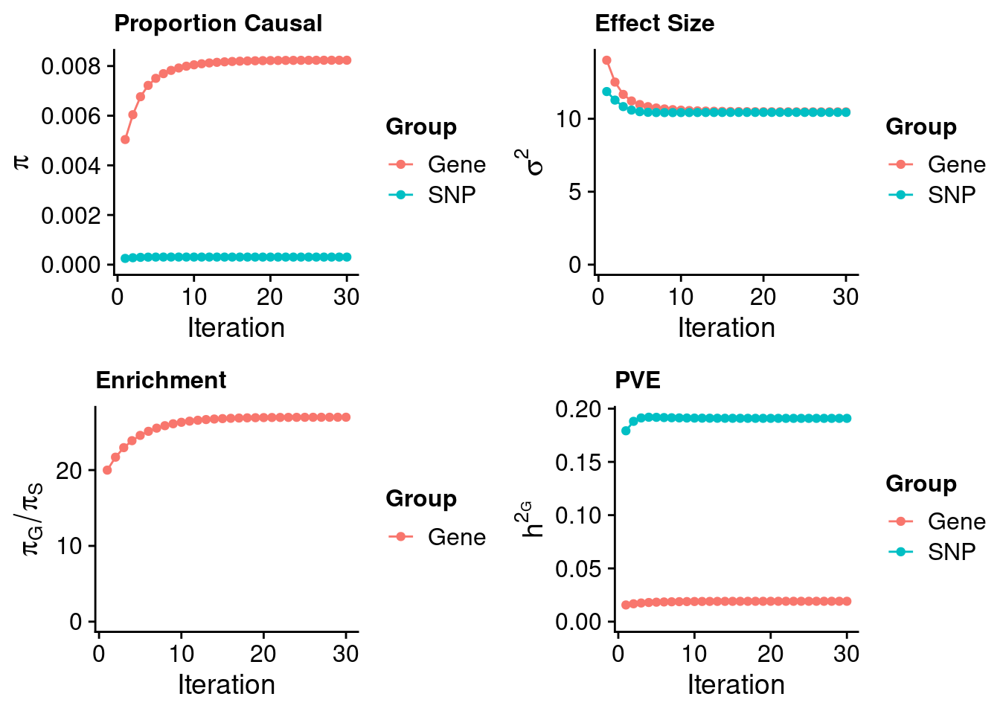
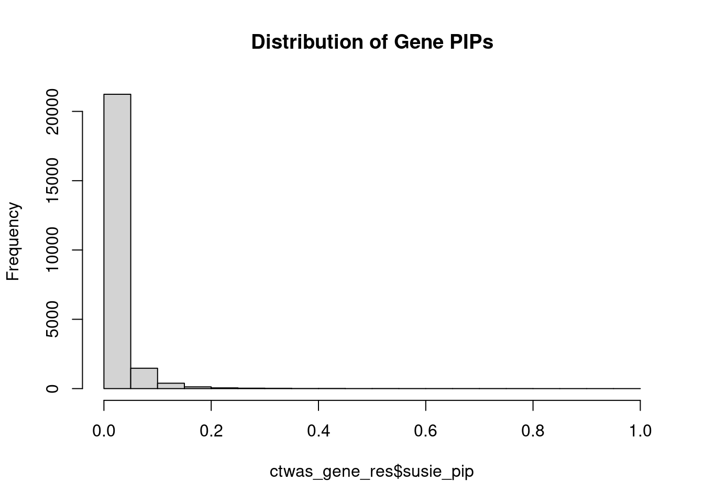
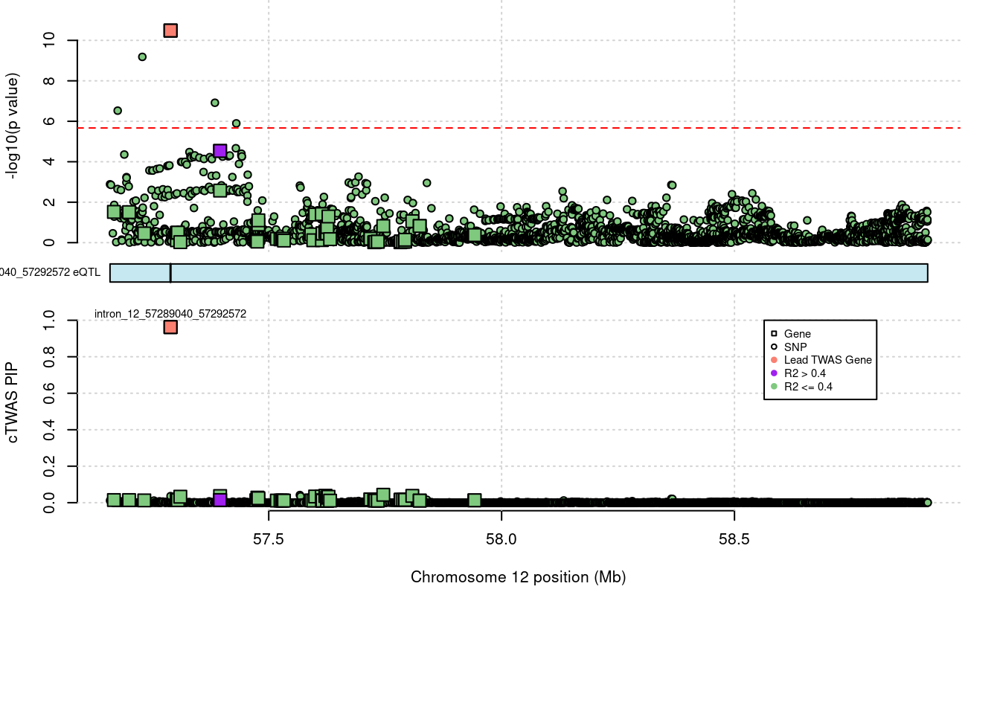
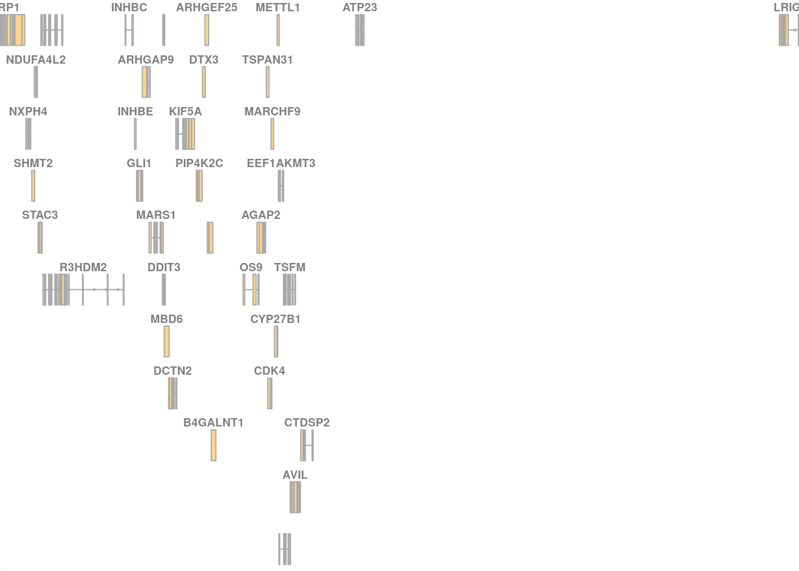

Last updated: 2022-09-03
Checks: 5 2
Knit directory: cTWAS_analysis/
This reproducible R Markdown analysis was created with workflowr (version 1.7.0). The Checks tab describes the reproducibility checks that were applied when the results were created. The Past versions tab lists the development history.
The R Markdown file has unstaged changes. To know which version of the R Markdown file created these results, you’ll want to first commit it to the Git repo. If you’re still working on the analysis, you can ignore this warning. When you’re finished, you can run wflow_publish to commit the R Markdown file and build the HTML.
Great job! The global environment was empty. Objects defined in the global environment can affect the analysis in your R Markdown file in unknown ways. For reproduciblity it’s best to always run the code in an empty environment.
The command set.seed(20211220) was run prior to running the code in the R Markdown file. Setting a seed ensures that any results that rely on randomness, e.g. subsampling or permutations, are reproducible.
Great job! Recording the operating system, R version, and package versions is critical for reproducibility.
Nice! There were no cached chunks for this analysis, so you can be confident that you successfully produced the results during this run.
Using absolute paths to the files within your workflowr project makes it difficult for you and others to run your code on a different machine. Change the absolute path(s) below to the suggested relative path(s) to make your code more reproducible.
| absolute | relative |
|---|---|
| /project2/xinhe/shengqian/cTWAS/cTWAS_analysis/data/ | data |
| /project2/xinhe/shengqian/cTWAS/cTWAS_analysis/code/ctwas_config_b37.R | code/ctwas_config_b37.R |
Great! You are using Git for version control. Tracking code development and connecting the code version to the results is critical for reproducibility.
The results in this page were generated with repository version b4b5f19. See the Past versions tab to see a history of the changes made to the R Markdown and HTML files.
Note that you need to be careful to ensure that all relevant files for the analysis have been committed to Git prior to generating the results (you can use wflow_publish or wflow_git_commit). workflowr only checks the R Markdown file, but you know if there are other scripts or data files that it depends on. Below is the status of the Git repository when the results were generated:
Ignored files:
Ignored: .Rhistory
Ignored: .ipynb_checkpoints/
Ignored: analysis/figure/
Untracked files:
Untracked: G_list.RData
Untracked: Rplot.png
Untracked: SCZ_annotation.xlsx
Untracked: analysis/.ipynb_checkpoints/
Untracked: cache/
Untracked: code/.ipynb_checkpoints/
Untracked: code/AF_out/
Untracked: code/IBD_ME_out/
Untracked: code/LDL_S_out/
Untracked: code/SCZ_2014_EUR_ME_EUR_out/
Untracked: code/SCZ_2014_EUR_out/
Untracked: code/SCZ_2018_ME_out/
Untracked: code/SCZ_2018_S_out/
Untracked: code/SCZ_2018_out/
Untracked: code/SCZ_2020_out/
Untracked: code/SCZ_S_out/
Untracked: code/SCZ_out/
Untracked: code/T2D_out/
Untracked: code/ctwas_config_b37.R
Untracked: code/ctwas_config_b38.R
Untracked: code/mapping.R
Untracked: code/out/
Untracked: code/process_scz_2018_snps.R
Untracked: code/run_AF_analysis.sbatch
Untracked: code/run_AF_analysis.sh
Untracked: code/run_AF_ctwas_rss_LDR.R
Untracked: code/run_Autism_analysis.sbatch
Untracked: code/run_Autism_analysis.sh
Untracked: code/run_Autism_ctwas_rss_LDR.R
Untracked: code/run_BMI_analysis.sbatch
Untracked: code/run_BMI_analysis.sh
Untracked: code/run_BMI_analysis_S.sbatch
Untracked: code/run_BMI_analysis_S.sh
Untracked: code/run_BMI_ctwas_rss_LDR.R
Untracked: code/run_BMI_ctwas_rss_LDR_S.R
Untracked: code/run_Glucose_analysis.sbatch
Untracked: code/run_Glucose_analysis.sh
Untracked: code/run_Glucose_ctwas_rss_LDR.R
Untracked: code/run_IBD_analysis_ME.sbatch
Untracked: code/run_IBD_analysis_ME.sh
Untracked: code/run_IBD_ctwas_rss_LDR_ME.R
Untracked: code/run_LDL_analysis_S.sbatch
Untracked: code/run_LDL_analysis_S.sh
Untracked: code/run_LDL_ctwas_rss_LDR_S.R
Untracked: code/run_SCZ_2014_EUR_analysis.sbatch
Untracked: code/run_SCZ_2014_EUR_analysis.sh
Untracked: code/run_SCZ_2014_EUR_analysis_ME.sbatch
Untracked: code/run_SCZ_2014_EUR_analysis_ME.sh
Untracked: code/run_SCZ_2014_EUR_ctwas_rss_LDR_ME.R
Untracked: code/run_SCZ_2018_analysis.sbatch
Untracked: code/run_SCZ_2018_analysis.sh
Untracked: code/run_SCZ_2018_analysis_ME.sbatch
Untracked: code/run_SCZ_2018_analysis_ME.sh
Untracked: code/run_SCZ_2018_analysis_S.sbatch
Untracked: code/run_SCZ_2018_analysis_S.sh
Untracked: code/run_SCZ_2018_ctwas_rss_LDR.R
Untracked: code/run_SCZ_2018_ctwas_rss_LDR_ME.R
Untracked: code/run_SCZ_2018_ctwas_rss_LDR_S.R
Untracked: code/run_SCZ_2020_analysis.sbatch
Untracked: code/run_SCZ_2020_analysis.sh
Untracked: code/run_SCZ_2020_ctwas_rss_LDR.R
Untracked: code/run_SCZ_analysis.sbatch
Untracked: code/run_SCZ_analysis.sh
Untracked: code/run_SCZ_analysis_S.sbatch
Untracked: code/run_SCZ_analysis_S.sh
Untracked: code/run_SCZ_ctwas_rss_LDR.R
Untracked: code/run_SCZ_ctwas_rss_LDR_S.R
Untracked: code/run_T2D_analysis.sbatch
Untracked: code/run_T2D_analysis.sh
Untracked: code/run_T2D_ctwas_rss_LDR.R
Untracked: code/trackplot.R
Untracked: code/wflow_build.R
Untracked: code/wflow_build.sbatch
Untracked: data/.ipynb_checkpoints/
Untracked: data/FUMA_output/
Untracked: data/GO_Terms/
Untracked: data/IBD_ME/
Untracked: data/PGC3_SCZ_wave3_public.v2.tsv
Untracked: data/SCZ/
Untracked: data/SCZ_2014_EUR/
Untracked: data/SCZ_2014_EUR_ME/
Untracked: data/SCZ_2018/
Untracked: data/SCZ_2018_ME/
Untracked: data/SCZ_2018_S/
Untracked: data/SCZ_2020/
Untracked: data/SCZ_S/
Untracked: data/Supplementary Table 15 - MAGMA.xlsx
Untracked: data/Supplementary Table 20 - Prioritised Genes.xlsx
Untracked: data/T2D/
Untracked: data/UKBB/
Untracked: data/UKBB_SNPs_Info.text
Untracked: data/gene_OMIM.txt
Untracked: data/gene_pip_0.8.txt
Untracked: data/gwas_sumstats/
Untracked: data/magma.genes.out
Untracked: data/mashr_Heart_Atrial_Appendage.db
Untracked: data/mashr_sqtl/
Untracked: data/notes.txt
Untracked: data/scz_2018.RDS
Untracked: data/summary_known_genes_annotations.xlsx
Untracked: top_genes_32.txt
Untracked: top_genes_37.txt
Untracked: top_genes_43.txt
Untracked: top_genes_54.txt
Untracked: top_genes_81.txt
Untracked: z_snp_pos_SCZ.RData
Untracked: z_snp_pos_SCZ_2014_EUR.RData
Untracked: z_snp_pos_SCZ_2018.RData
Untracked: z_snp_pos_SCZ_2020.RData
Unstaged changes:
Deleted: analysis/BMI_S_results.Rmd
Modified: analysis/SCZ_S_test.Rmd
Note that any generated files, e.g. HTML, png, CSS, etc., are not included in this status report because it is ok for generated content to have uncommitted changes.
These are the previous versions of the repository in which changes were made to the R Markdown (analysis/SCZ_S_test.Rmd) and HTML (docs/SCZ_S_test.html) files. If you’ve configured a remote Git repository (see ?wflow_git_remote), click on the hyperlinks in the table below to view the files as they were in that past version.
| File | Version | Author | Date | Message |
|---|---|---|---|---|
| Rmd | 2b787bd | sq-96 | 2022-09-03 | update |
#number of imputed weights
nrow(qclist_all)[1] 23372#number of imputed weights by chromosome
table(qclist_all$chr)
1 2 3 4 5 6 7 8 9 10 11 12 13 14 15 16
2106 1670 1401 900 973 1205 1349 834 978 1043 1384 1297 477 810 795 919
17 18 19 20 21 22
1718 307 1661 776 45 724 #number of imputed weights without missing variants
sum(qclist_all$nmiss==0)[1] 20390#proportion of imputed weights without missing variants
mean(qclist_all$nmiss==0)[1] 0.8724114#add z scores to results
load(paste0(results_dir, "/", analysis_id, "_expr_z_gene.Rd"))
ctwas_gene_res$z <- z_gene[ctwas_gene_res$id,]$z
z_snp <- z_snp[z_snp$id %in% ctwas_snp_res$id,]
ctwas_snp_res$z <- z_snp$z[match(ctwas_snp_res$id, z_snp$id)]
#merge gene and snp results with added information
ctwas_gene_res$genename=NA
ctwas_gene_res$gene_type=NA
ctwas_snp_res$genename=NA
ctwas_snp_res$gene_type=NA
ctwas_res <- rbind(ctwas_gene_res,
ctwas_snp_res[,colnames(ctwas_gene_res)])
#get number of sQTL for geens
num_sqtl <- c()
for (i in 1:22){
load(paste0(results_dir, "/", analysis_id, "_expr_chr", i, ".exprqc.Rd"))
num_sqtl <- c(num_sqtl, unlist(lapply(wgtlist, nrow)))
}
ctwas_gene_res$num_sqtl <- num_sqtl[ctwas_gene_res$id]
#store columns to report
report_cols <- colnames(ctwas_gene_res)[!(colnames(ctwas_gene_res) %in% c("type", "region_tag1", "region_tag2", "cs_index", "gene_type", "z_flag"))]
first_cols <- c("genename", "region_tag")
report_cols <- c(first_cols, report_cols[!(report_cols %in% first_cols)])
report_cols_snps <- c("id", report_cols[-1])
report_cols_snps <- report_cols_snps[!(report_cols_snps %in% "num_sqtl")]
#get number of SNPs from s1 results; adjust for thin argument
ctwas_res_s1 <- data.table::fread(paste0(results_dir, "/", analysis_id, "_ctwas.s1.susieIrss.txt"))
n_snps <- sum(ctwas_res_s1$type=="SNP")/thin
rm(ctwas_res_s1)library(ggplot2)
library(cowplot)
load(paste0(results_dir, "/", analysis_id, "_ctwas.s2.susieIrssres.Rd"))
group_size <- c(nrow(ctwas_gene_res), n_snps)
#estimated group prior (all iterations)
estimated_group_prior_all <- group_prior_rec
rownames(estimated_group_prior_all) <- c("gene", "snp")
estimated_group_prior_all["snp",] <- estimated_group_prior_all["snp",]*thin #adjust parameter to account for thin argument
#estimated group prior variance (all iterations)
estimated_group_prior_var_all <- group_prior_var_rec
rownames(estimated_group_prior_var_all) <- c("gene", "snp")
#estimated group PVE (all iterations)
estimated_group_pve_all <- estimated_group_prior_var_all*estimated_group_prior_all*group_size/sample_size #check PVE calculation
rownames(estimated_group_pve_all) <- c("gene", "snp")
#estimated enrichment of genes (all iterations)
estimated_enrichment_all <- estimated_group_prior_all["gene",]/estimated_group_prior_all["snp",]
title_size <- 12
df <- data.frame(niter = rep(1:ncol(estimated_group_prior_all), 2),
value = c(estimated_group_prior_all["gene",], estimated_group_prior_all["snp",]),
group = rep(c("Gene", "SNP"), each = ncol(estimated_group_prior_all)))
df$group <- as.factor(df$group)
p_pi <- ggplot(df, aes(x=niter, y=value, group=group)) +
geom_line(aes(color=group)) +
geom_point(aes(color=group)) +
xlab("Iteration") + ylab(bquote(pi)) +
ggtitle("Proportion Causal") +
theme_cowplot()
p_pi <- p_pi + theme(plot.title=element_text(size=title_size)) +
expand_limits(y=0) +
guides(color = guide_legend(title = "Group")) + theme (legend.title = element_text(size=12, face="bold"))
df <- data.frame(niter = rep(1:ncol(estimated_group_prior_var_all ), 2),
value = c(estimated_group_prior_var_all["gene",], estimated_group_prior_var_all["snp",]),
group = rep(c("Gene", "SNP"), each = ncol(estimated_group_prior_var_all)))
df$group <- as.factor(df$group)
p_sigma2 <- ggplot(df, aes(x=niter, y=value, group=group)) +
geom_line(aes(color=group)) +
geom_point(aes(color=group)) +
xlab("Iteration") + ylab(bquote(sigma^2)) +
ggtitle("Effect Size") +
theme_cowplot()
p_sigma2 <- p_sigma2 + theme(plot.title=element_text(size=title_size)) +
expand_limits(y=0) +
guides(color = guide_legend(title = "Group")) + theme (legend.title = element_text(size=12, face="bold"))
df <- data.frame(niter = rep(1:ncol(estimated_group_pve_all ), 2),
value = c(estimated_group_pve_all["gene",], estimated_group_pve_all["snp",]),
group = rep(c("Gene", "SNP"), each = ncol(estimated_group_pve_all)))
df$group <- as.factor(df$group)
p_pve <- ggplot(df, aes(x=niter, y=value, group=group)) +
geom_line(aes(color=group)) +
geom_point(aes(color=group)) +
xlab("Iteration") + ylab(bquote(h^2[G])) +
ggtitle("PVE") +
theme_cowplot()
p_pve <- p_pve + theme(plot.title=element_text(size=title_size)) +
expand_limits(y=0) +
guides(color = guide_legend(title = "Group")) + theme (legend.title = element_text(size=12, face="bold"))
df <- data.frame(niter = 1:length(estimated_enrichment_all),
value = estimated_enrichment_all,
group = rep("Gene", length(estimated_enrichment_all)))
df$group <- as.factor(df$group)
p_enrich <- ggplot(df, aes(x=niter, y=value, group=group)) +
geom_line(aes(color=group)) +
geom_point(aes(color=group)) +
xlab("Iteration") + ylab(bquote(pi[G]/pi[S])) +
ggtitle("Enrichment") +
theme_cowplot()
p_enrich <- p_enrich + theme(plot.title=element_text(size=title_size)) +
expand_limits(y=0) +
guides(color = guide_legend(title = "Group")) + theme (legend.title = element_text(size=12, face="bold"))
plot_grid(p_pi, p_sigma2, p_enrich, p_pve)
#estimated group prior
estimated_group_prior <- estimated_group_prior_all[,ncol(group_prior_rec)]
print(estimated_group_prior) gene snp
0.0082337835 0.0003052267 #estimated group prior variance
estimated_group_prior_var <- estimated_group_prior_var_all[,ncol(group_prior_var_rec)]
print(estimated_group_prior_var) gene snp
10.47522 10.43821 #estimated enrichment
estimated_enrichment <- estimated_enrichment_all[ncol(group_prior_var_rec)]
print(estimated_enrichment)[1] 26.97596#report sample size
print(sample_size)[1] 105318#report group size
print(group_size)[1] 23372 6309950#estimated group PVE
estimated_group_pve <- estimated_group_pve_all[,ncol(group_prior_rec)] #check PVE calculation
print(estimated_group_pve) gene snp
0.01914061 0.19088499 #compare sum(PIP*mu2/sample_size) with above PVE calculation
#c(sum(ctwas_gene_res$PVE),sum(ctwas_snp_res$PVE))
#total PVE
sum(estimated_group_pve)[1] 0.2100256#PVE attributable to gene expression
estimated_group_pve["gene"]/sum(estimated_group_pve) gene
0.09113464 #distribution of PIPs
hist(ctwas_gene_res$susie_pip, xlim=c(0,1), main="Distribution of Gene PIPs")
#genes with PIP>0.8 or 20 highest PIPs
head(ctwas_gene_res[order(-ctwas_gene_res$susie_pip),report_cols], max(sum(ctwas_gene_res$susie_pip>0.8), 20)) genename region_tag chrom id pos
23124 NA 12_36 12 intron_12_57289040_57292572 57289173
23207 NA 12_68 12 intron_12_113320686_113320850 113320361
23219 NA 15_14 15 intron_15_40274276_40275927 40274558
22855 NA 1_27 1 intron_1_43612800_43613618 43612713
16793 NA 15_50 15 intron_15_101287010_101287656 101286714
20669 NA 19_25 19 intron_19_36039718_36054135 36039430
22883 NA 5_86 5 intron_5_147424963_147509478 147424612
16676 NA 15_41 15 intron_15_87940753_88032857 87940363
3551 NA 2_132 2 intron_2_224535641_224557659 224535147
15432 NA 14_9 14 intron_14_35046406_35046505 35050161
23308 NA 19_34 19 intron_19_49663514_49664674 49665614
14559 NA 12_74 12 intron_12_121244129_121244573 121243733
18235 NA 17_16 17 intron_17_20009424_20096631 20009397
3332 NA 2_117 2 intron_2_197418588_197418896 197418581
2040 NA 1_128 1 intron_1_243497959_243499756 243498440
7870 NA 6_85 6 intron_6_128000330_128001196 128001292
14433 NA 12_67 12 intron_12_110377617_110377705 110378117
9282 NA 7_87 7 intron_7_141006535_141014911 141006357
15999 NA 14_54 14 intron_14_103574170_103587274 103573728
17228 NA 16_19 16 intron_16_21979251_21980547 21979439
susie_pip mu2 PVE z num_sqtl
23124 0.9625689 42.83057 0.0003914561 -6.633958 1
23207 0.9203431 22.26379 0.0001945567 -4.047300 1
23219 0.8865814 29.76619 0.0002505759 5.588443 1
22855 0.7922159 35.71238 0.0002686332 6.679706 1
16793 0.7821729 20.88355 0.0001550974 -4.098246 2
20669 0.7522261 21.58779 0.0001541892 -3.846292 2
22883 0.7391800 22.22253 0.0001559700 -4.156523 1
16676 0.7287305 22.27428 0.0001541232 4.456558 1
3551 0.7051285 30.34916 0.0002031947 5.777011 1
15432 0.7009065 23.30743 0.0001551143 4.849278 1
23308 0.6989769 39.57142 0.0002626285 -6.460538 1
14559 0.6971263 25.44703 0.0001684403 4.059962 2
18235 0.6836768 25.23536 0.0001638165 -4.821555 1
3332 0.6755248 45.11586 0.0002893796 7.053464 1
2040 0.6494652 33.31793 0.0002054619 -6.291199 1
7870 0.6489625 28.19797 0.0001737540 -5.058522 1
14433 0.5921211 39.17508 0.0002202510 6.385407 1
9282 0.5692339 26.28823 0.0001420854 -4.304399 1
15999 0.5393272 43.76857 0.0002241362 7.429290 1
17228 0.5210778 22.84861 0.0001130472 4.716159 1#set nominal signifiance threshold for z scores
alpha <- 0.05
#bonferroni adjusted threshold for z scores
sig_thresh <- qnorm(1-(alpha/nrow(ctwas_gene_res)/2), lower=T)Loading required package: S4VectorsLoading required package: stats4Loading required package: BiocGenerics
Attaching package: 'BiocGenerics'The following objects are masked from 'package:stats':
IQR, mad, sd, var, xtabsThe following objects are masked from 'package:base':
anyDuplicated, append, as.data.frame, basename, cbind, colnames,
dirname, do.call, duplicated, eval, evalq, Filter, Find, get, grep,
grepl, intersect, is.unsorted, lapply, Map, mapply, match, mget,
order, paste, pmax, pmax.int, pmin, pmin.int, Position, rank,
rbind, Reduce, rownames, sapply, setdiff, sort, table, tapply,
union, unique, unsplit, which.max, which.min
Attaching package: 'S4Vectors'The following object is masked from 'package:base':
expand.gridLoading required package: IRangesLoading required package: GenomicRangesLoading required package: GenomeInfoDbLoading required package: grida <- locus_plot_final_pub(region_tag="12_36", return_table=T,
focus=NULL,
label_genes=NULL,
label_panel="both",
legend_side="right",
legend_panel="cTWAS")
locus_plot_gene_track_pub(a, label_pos="above")
sessionInfo()R version 4.1.0 (2021-05-18)
Platform: x86_64-pc-linux-gnu (64-bit)
Running under: Scientific Linux 7.4 (Nitrogen)
Matrix products: default
BLAS/LAPACK: /software/openblas-0.3.13-el7-x86_64/lib/libopenblas_haswellp-r0.3.13.so
locale:
[1] LC_CTYPE=en_US.UTF-8 LC_NUMERIC=C
[3] LC_TIME=en_US.UTF-8 LC_COLLATE=en_US.UTF-8
[5] LC_MONETARY=en_US.UTF-8 LC_MESSAGES=en_US.UTF-8
[7] LC_PAPER=en_US.UTF-8 LC_NAME=C
[9] LC_ADDRESS=C LC_TELEPHONE=C
[11] LC_MEASUREMENT=en_US.UTF-8 LC_IDENTIFICATION=C
attached base packages:
[1] grid stats4 stats graphics grDevices utils datasets
[8] methods base
other attached packages:
[1] Gviz_1.38.4 GenomicRanges_1.46.0 GenomeInfoDb_1.26.7
[4] IRanges_2.24.1 S4Vectors_0.28.1 BiocGenerics_0.40.0
[7] biomaRt_2.50.0 cowplot_1.1.1 ggplot2_3.3.6
[10] workflowr_1.7.0
loaded via a namespace (and not attached):
[1] colorspace_2.0-3 rjson_0.2.20
[3] ellipsis_0.3.2 rprojroot_2.0.3
[5] htmlTable_2.2.1 biovizBase_1.42.0
[7] XVector_0.34.0 base64enc_0.1-3
[9] fs_1.5.2 dichromat_2.0-0.1
[11] rstudioapi_0.13 farver_2.1.0
[13] bit64_4.0.5 AnnotationDbi_1.56.1
[15] fansi_1.0.3 xml2_1.3.2
[17] splines_4.1.0 cachem_1.0.6
[19] knitr_1.33 Formula_1.2-4
[21] jsonlite_1.8.0 Rsamtools_2.10.0
[23] cluster_2.1.2 dbplyr_2.1.1
[25] png_0.1-7 compiler_4.1.0
[27] httr_1.4.3 backports_1.2.1
[29] lazyeval_0.2.2 assertthat_0.2.1
[31] Matrix_1.3-3 fastmap_1.1.0
[33] cli_3.3.0 later_1.2.0
[35] htmltools_0.5.3 prettyunits_1.1.1
[37] tools_4.1.0 gtable_0.3.0
[39] glue_1.6.2 GenomeInfoDbData_1.2.7
[41] dplyr_1.0.9 rappdirs_0.3.3
[43] Rcpp_1.0.9 Biobase_2.54.0
[45] jquerylib_0.1.4 vctrs_0.4.1
[47] Biostrings_2.62.0 rtracklayer_1.54.0
[49] xfun_0.24 stringr_1.4.0
[51] ps_1.7.0 lifecycle_1.0.1
[53] ensembldb_2.18.4 restfulr_0.0.13
[55] XML_3.99-0.6 getPass_0.2-2
[57] zlibbioc_1.40.0 scales_1.2.0
[59] BSgenome_1.62.0 VariantAnnotation_1.40.0
[61] ProtGenerics_1.26.0 hms_1.1.1
[63] promises_1.2.0.1 MatrixGenerics_1.6.0
[65] parallel_4.1.0 SummarizedExperiment_1.24.0
[67] AnnotationFilter_1.18.0 RColorBrewer_1.1-3
[69] yaml_2.2.1 curl_4.3.2
[71] gridExtra_2.3 memoise_2.0.1
[73] sass_0.4.0 rpart_4.1-15
[75] latticeExtra_0.6-29 stringi_1.7.6
[77] RSQLite_2.2.14 highr_0.9
[79] BiocIO_1.4.0 checkmate_2.0.0
[81] GenomicFeatures_1.46.1 filelock_1.0.2
[83] BiocParallel_1.28.0 rlang_1.0.4
[85] pkgconfig_2.0.3 bitops_1.0-7
[87] matrixStats_0.62.0 evaluate_0.15
[89] lattice_0.20-44 purrr_0.3.4
[91] htmlwidgets_1.5.3 GenomicAlignments_1.30.0
[93] labeling_0.4.2 bit_4.0.4
[95] processx_3.5.3 tidyselect_1.1.2
[97] magrittr_2.0.3 R6_2.5.1
[99] generics_0.1.2 Hmisc_4.5-0
[101] DelayedArray_0.20.0 DBI_1.1.2
[103] foreign_0.8-81 pillar_1.7.0
[105] whisker_0.4 withr_2.5.0
[107] nnet_7.3-16 survival_3.2-11
[109] KEGGREST_1.34.0 RCurl_1.98-1.6
[111] tibble_3.1.7 crayon_1.5.1
[113] utf8_1.2.2 BiocFileCache_2.2.0
[115] rmarkdown_2.9 jpeg_0.1-8.1
[117] progress_1.2.2 data.table_1.14.2
[119] blob_1.2.3 callr_3.7.0
[121] git2r_0.28.0 digest_0.6.29
[123] httpuv_1.6.1 munsell_0.5.0
[125] bslib_0.4.0